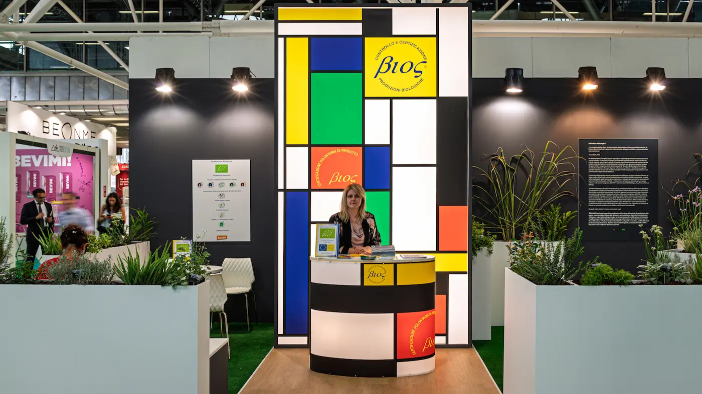
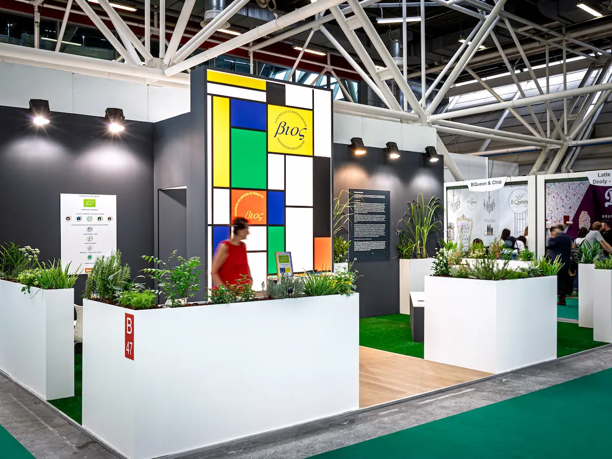
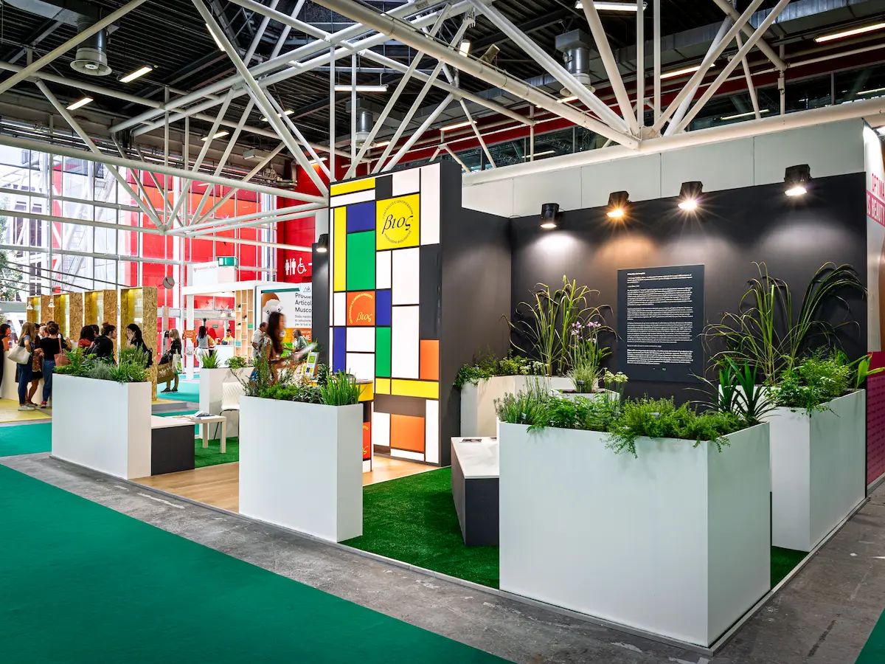
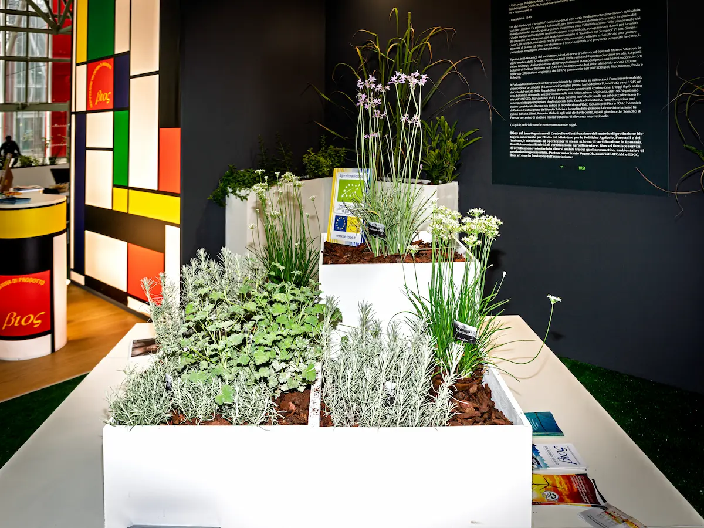
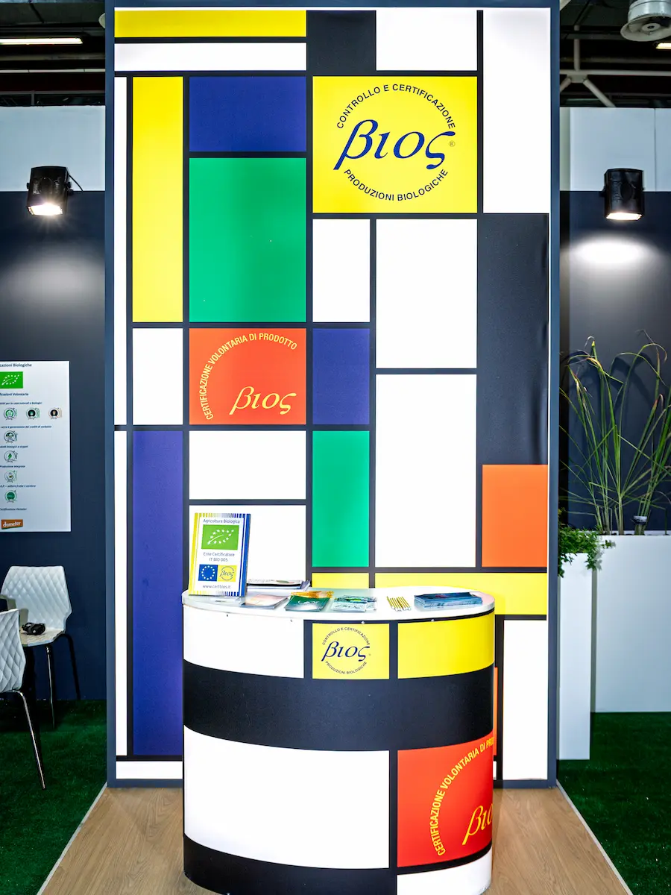
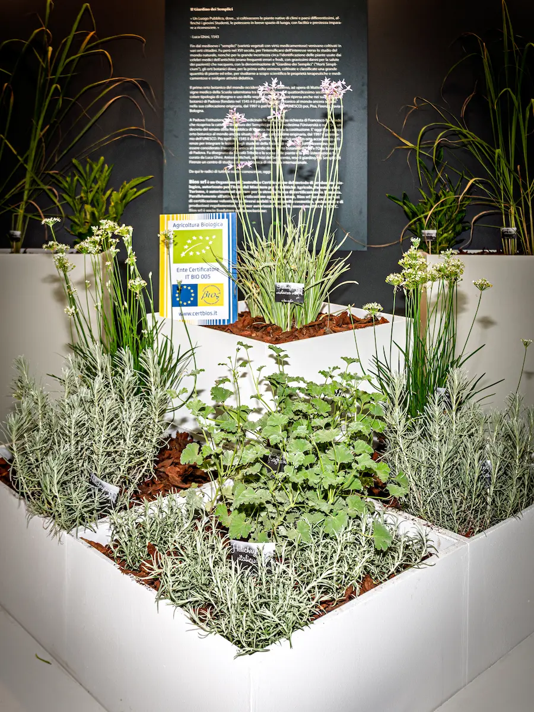

Un allestimento che da una parte mette insieme i loghi colorati di Bios in una grande tela luminosa ispirata alle geometrie lineari e ai colori primari di Mondrian in modo da inquadrare la galassia dei loghi in una struttura coerente, e dall'altra un luogo accogliente ispirato al il giardino dei semplici con sedute circondate da piante officinali
Qui la difficoltà di mettere in scena non i prodotti ma il valore aggiunto che la certificazione porta ai clienti




